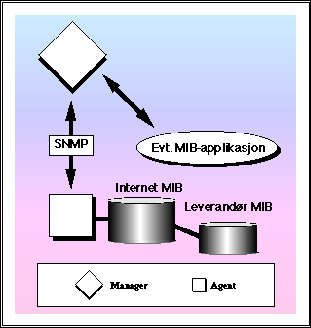

2.1 SNMP - de enkelte bitene


Neste: 2.1.1 Management Information Base
Opp: 2 Introduksjon til SNMP
Forrige: 2 Introduksjon til SNMP
Hvordan virker så SNMP og hva er fordeler og eventuelle ulemper?
Protokollen tilbyr egentlig bare tre funksjoner:
- lese av en verdi på en variabel i en agent
- sette en verdi på en variabel i en agent
- motta såkalte traps fra en agent

Figur 3: SNMP - en agent/manager modell for nettverksadministrasjon
© Oslonett AS, 15/05-95, 10:35:03